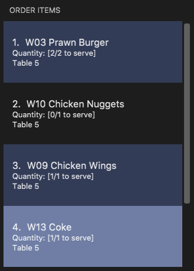

Overview
RestOrRant is a command line interface (CLI) restaurant management application that my team and I designed for the CS2103T Software Engineering module in NUS School of Computing. For our module project, we morphed RestOrRant from an address book application into one that allows restaurant managers and waiters to perform front-end operations efficiently. This includes allocating tables to customers, handling orders, tracking item availability and calculating bills. Managers can also view revenue and order statistics to determine how the restaurant is faring.
We split the application into four main features: Tables, Orders, Menu and Statistics. Each team member was in charge of one feature and mine was the Orders feature. I also conceptualised and implemented the Mode system alongside my team members.
I will be sharing more about the Orders and Modes features in the following sections, as well as extracting the relevant parts of the User Guide and Developer Guide that I wrote for these features.
You may refer to the table below for the symbols and formatting used in this portfolio.
|
A grey highlight with monospaced font indicates a command that can be typed into the command box of the application. |
|
A blue information symbol indicates additional information for that section that is good to know. |
Summary of contributions
In this section, I will provide a summary of the contributions that I have made to the team project. These contributions include the features that I implemented, as well as other project-related contributions. |
-
Major enhancement added (Orders feature): I added the Orders feature and all of its related commands.
-
What it does: It allows restaurant front-end staff to take orders from customers using the
addToOrdercommand, as well as remove incorrectly inputted orders using thedeleteFromOrderorclearOrdercommands. They can track the current list of items ordered for each table (in Table Mode) or across all tables (in Restaurant Mode) and update their serving statuses with theservecommand. -
Justification: Restaurant front-end staff will need this core feature as keeping track of orders is one of the crucial front-end operations that restaurants have to manage. This feature allow orders to be handled more efficiently so that customers can be promptly attended to and served.
-
Highlights: -
-
-
Other enhancement added (Modes feature): I conceptualised the Mode system and added features related to the changing of modes.
-
What it does: RestOrRant has four modes for each of the four features. Users can switch between modes to use the other features by using commands, such as the
restaurantModeandtableModecommands that I implemented. -
Justification: Translating our main features into different application modes provides a functional and visual distinction between the features and makes RestOrRant more organised and clear for its users. The Mode system also allows us to provide users with only the relevant displays for each feature instead of overwhelming users with all the information at one shot.
-
Highlights: -
-
-
Code contributed: [Project Code Dashboard]
-
Other contributions:
-
Project management:
-
Charted the direction and progress of the project and facilitated weekly project meetings as the team lead
-
Set up the issues tracker on GitHub for our project
-
Managed the integration of code by ensuring the compatibility of merged Pull Requests
-
-
Enhancements to existing features:
-
Updated the GUI colour scheme and implemented the ability to switch between colour schemes for the different modes
-
Wrote additional tests for existing features
-
-
Documentation:
-
Did tweaks to existing contents of the User Guide
-
Reorganised and rewrote the Introduction and Quick Start section
-
Split commands into their respective modes to present a clearer structure
-
Revamped Command Summary into table form for ease of reference
-
-
-
Community:
-
PRs reviewed (with non-trivial review comments)
-
-
Tools:
-
Set up GitHub, Travis, AppVeyor and Coveralls for our project
-
Set up auto-publishing of docs
-
-
Contributions to the User Guide
This section shows the additions that I have made to the User Guide to provide information about how the Modes and Orders features work. |
Changing Modes
The commands in this section allow you to switch between modes to use the features that each mode provides. You can use these commands in any mode except if you are already in the mode that you are trying to switch to.
| You may find out more information about RestOrRant’s Mode system here. |
Switching to Restaurant Mode : restaurantMode
You can use this command to switch over to Restaurant Mode to manage the occupancy of the tables in the restaurant.
| Restaurant Mode is the default application mode when first starting up RestOrRant. |
|
The user interface switches to Restaurant Mode. |
Switching to Table Mode : tableMode
You can use this command to switch over to Table Mode for the specified table number to handle the orders of that table.
| You can only access Table Mode for tables that exist in the restaurant and are currently occupied. The tables can be updated in Restaurant Mode. |
| You can use this command in Table Mode if you are switching to a different table number. |
|
The user interface switches to Table Mode. The specified table number is also indicated in the Results Display and as part of the Current Mode in the status bar. |
For example, after executing 
The table number will also be displayed in the Current Mode portion of the status bar until you change the mode, as shown below. 
|
Switching to Menu Mode : menuMode
You can use this command to switch over to Menu Mode to modify the menu stored in RestOrRant.
|
The user interface switches to Menu Mode. |
Switching to Statistics Mode : statisticsMode
You can use this command to switch over to Statistics Mode to view revenue and order statistics for your restaurant.
| The default Revenue Panel view is Daily when you first switch over to Statistics Mode. You can find out more about the different views here. |
|
The user interface switches to Statistics Mode. |
Table Mode
In Table Mode, you can handle orders from the current table, which is given by the table number that was specified in the tableMode command.
You can take orders, track the serving status of the items ordered, and calculate the bill for that table in this mode.
The user interface for Table Mode (on Table 5) is shown in the image below.

The function of the side and main panels are as follows:
-
Order Panel: This panel shows you the list of items ordered by the current table, arranged in chronological order. It also indicates the quantity left to serve for each item, and the background turns dark when the item is fully served.
-
Menu Panel: This panel displays the items on the menu along with their item codes for you to conveniently refer to when taking orders.
Here are the commands that you can use in this mode to efficiently handle the orders in your restaurant.
Adding item(s) to an order : addToOrder
As you are taking an order from customers, this command allows you to record down the items that were ordered by the table by specifying the item code and quantity for each item that was ordered. You may also add more quantities to an item that has already been previously ordered by the table if customers choose to order more.
| The maximum quantity of an item that can be ordered by a table is 2,000,000. |
| The item codes for each item on the menu can be easily found from the Menu Panel. |
You can only add item codes that exist in the menu. You may add items to the menu using the addToMenu command in Menu Mode.
|
| You can add multiple or duplicate order items in a single command! If any of the item codes do not exist in the menu or if the new quantity exceeds 2,000,000, then that item and subsequent items will not be added to the order. |
|
You will see a success message in the Results Display and the updated order items will be displayed in the Order Panel. |
For example, Table 5 initially has 4 items in the Order Panel as shown below. Note that the quantity of Coke ordered is 1.

Suppose the customers at Table 5 want to order 1 more Cheeseburger and 1 more Coke. After executing 
The Order Panel will also be updated and you will now see 5 items displayed. As seen in the image below, 1 portion of Cheeseburger has been added as the 5th item, while the quantity of Coke ordered has been updated from 1 to 2. 
|
Adding a note to an order item : addNote (Coming in v2.0)
Sometimes, customers may have special requests for their orders, such as reducing the level of spicyness or removing certain ingredients from their meal. You can easily add all these special requests and more to the order item with this command.
You can only add notes to item codes that have already been ordered by the table. You can add items to the order using the addToOrder command.
|
|
You will see a success message in the Results Display and the note will appear in a tag beside the item name in the Order Panel. |
For example, after executing |
Deleting an item from an order : deleteFromOrder
If you have accidentally keyed in an incorrect order or if the customer decides not to order a particular item anymore, you can remove that item from the table’s order with this command.
| You can only delete item codes that have already been ordered by the table. |
|
You will see a success message in the Results Display and the deleted order item will no longer be displayed in the Order Panel. |
For example, Table 5 initially has 4 items in the Order Panel as shown below. Note that Coke has been ordered by the table. Suppose the customers at Table 5 decide not to order Coke anymore. After executing 
The Order Panel will also be updated and you will now only see 3 items displayed. As seen in the image below, Coke has been removed from the order. 
|
Clearing all the items in an order : clearOrder
This command allows you to clear all the items ordered by a table so that you can take orders from scratch.
This command is irreversible and will not save the order under restaurant statistics. If the customers are done with the meal, use the bill command instead, which will automatically clear the orders from the table.
|
|
You will see a success message in the Results Display and the Order Panel will be empty. |
For example, Table 5 initially has 4 items in the Order Panel as shown below. After executing 
The Order Panel will now be empty, as seen in the image below. 
|
Marking an item in an order as served : serve
Once you have served items to the table, you can update the serving status of those items by using this command so that you can easily keep track of what has and has not been served.
You can only serve item codes and quantities that have not already been served for the table. You can add items to the order using the addToOrder command.
|
| If the quantity is not specified, the default quantity served is 1. |
|
You will see a success message in the Results Display and the order item’s quantity to serve in the Order Panel will be updated. The background of the order item also turns dark once it is fully served. |
For example, Table 5 initially has 4 items in the Order Panel as shown below. Note that there are still 2 Prawn Burgers that have yet to be served. Suppose the Prawn Burgers have been served and you want to update their serving status in RestOrRant. After executing 
The Order Panel will also be updated and you can see from the image below that there are no more quantities of Prawn Burger to serve. Since it is fully served, the background of the Prawn Burger item has turned dark. 
|
Calculating the bill of an order : bill
Calculates the bill of an order from the current selected table and displays the receipt.
Format: bill
Examples:
-
bill
Returns the total price of the order from the current table.
Contributions to the Developer Guide
This section shows the additions that I have made to the Developer Guide to show the implementation and design considerations for the Modes feature. As the implementation for the Orders feature is similar to the basic add, delete and clear commands across the features, I have left the explanation to the other team members to avoid repetition. |
Mode System
Modes
As ROR contains many features, users may find it complicated to handle all the features at one go with so many commands to use. Furthermore, users may be overwhelmed if all the restaurant’s information were to be displayed together in one screen.
As such, we have decided to implement a mode system for ROR to organise the available commands into their respective features. ROR provides 4 different modes for the users, each displaying a different set of panels that are relevant to the mode:
-
Restaurant Mode - perform table-related operations across the entire restaurant
-
Table Mode - perform order-related operations for a specific table
-
Menu Mode - perform menu-related operations on the restaurant’s menu
-
Statistics Mode - perform queries to retrieve the restaurant’s statistics
To use the different features, we have also implemented mode-changing commands for users to switch between the 4 user modes.
There is also a Bill Mode available for your use as a developer, although the existence of this mode is not shared with the users. The Bill Mode displays the receipt and is only used after the bill command is executed in RestOrRant.
Although the bill command is used in Table Mode, it is considered a Statistics feature rather than an Orders feature as it involves calculation for the revenue.
|
Current Implementation
Changing modes in general
The modes of the application are defined using a Mode enum and the current mode of the application is stored as a private attribute Mode mode in LogicManager. Users can switch between modes in ROR using the {XXX}Mode command, such as menuMode and tableMode. When the mode of the application is changed, we need to update the:
-
Logic component so that the mode attribute in LogicManager reflects the new current mode, since this is used to check if a command can be executed,
-
UI component so that the panels display the information that is relevant to the mode.
For all the mode-changing commands, these updates are done using a new toMode attribute added to the CommandResult object. As an example, the figure below shows the sequence diagram for when a user executes the menuMode command:

menuMode commandUpon execution of the menuMode command, MenuModeCommand#generateCommandResult() will generate a CommandResult whose toMode attribute is set to MENU_MODE and return it to the LogicManager. Now, the updates can be done for the respective components:
-
Logic component: LogicManager calls CommandResult#newModeStatus() to retrieve the mode to be changed to and updates the current mode stored in its mode attribute by calling LogicManager#changeMode(). The CommandResult is passed to MainWindow in UI.
-
UI component: MainWindow calls CommandResult#newModeStatus() to retrieve the mode to be changed to and updates the display panels by calling MainWindow#handleChangeMode().
| For commands that do not involve a change in mode, CommandResult#newModeStatus() will return null and no updates to the current mode or display will be done. |
Changing to Table Mode for a specific table
All the mode-changing commands take no parameters except for Table Mode. When the user wants to perform order-related operations (eg. add an item to the table’s order), the user will first have to switch to Table Mode by typing the tableMode command (or its shortcut command TM) followed by the table number of the table that the user wants to perform actions on.
The tableMode command can be used from any mode, even in Table Mode of a different table number. If the application is already in Table Mode of the same table number, or if the table specified by the table number is unoccupied, an error message will be shown to the user.
|
The following sequence diagram shows the relevant parts of what happens when a user executes the tableMode 3 command:

tableMode 3 commandThe Logic and UI component interactions work in a similar way to the other mode-changing commands and the implementation is mentioned above. The only difference is the parsing of the argument 3 into a TableNumber object that indicates the table number of the target table to switch to. This TableNumber object is stored as an attribute in `TableModeCommand.
Let’s focus on what happens to the Model component when the TableModeCommand is executed. The relevant parts of the sequence diagram has been extracted out and shown in the diagram below.

tableMode 3 commandIt first retrieves the Table that corresponds to its TableNumber attribute. This is done by going through Model#getRestOrRant() to obtain the ReadOnlyRestOrRant, whose getTables() method can be called to retrieve ReadOnlyTables that contains the list of all the tables in the restaurant. The Table can then be retrieved by passing TableNumber into ReadOnlyTables#getTableFromNumber().
The Table is then set as the selected table in Model using Model#setSelectedTable(). This is to keep track of the current table so that the Table Mode commands like addToOrder and bill can easily perform their operations by getting the table from Model#getSelectedTable().
After which, Model#updateFilteredOrderItemList() is called to update the filtered list such that it only contains order items ordered by the chosen table. This will then update the item list panel in the UI to display only the order items that were ordered by the chosen table.
Design Considerations
| Aspect | Alternative 1 | Alternative 2 |
|---|---|---|
Defining of modes |
Modes are defined using a Mode enum. We decided to choose this option as the enum is an abstraction over the possible modes. Apart from being less prone to errors, it also makes the code more readable as the enum values explicitly state the name of the mode (eg. TABLE_MODE, MENU_MODE) and are stored in Mode variables, making it clear that it refers to a mode and not just any string. |
Modes can be defined with strings (eg. "TableMode") or integers. |
Storing of current mode |
Mode stored in the Logic component (LogicManager). We decided to store the current mode in Logic because we note that most of the work that requires access to the current mode is done here, so providing a quick access will be more efficient. The Model component does not need to know what the current mode is at all, so it would be better to keep the coupling low to facilitate integration. |
Mode stored in the Model component (ModelManager). |
Specifying table number for Table Mode commands |
Table number specified once when switching to Table Mode, then retrieved from Model#getSelectedTable() for future commands. We decided to go ahead with this implementation as we feel that from a user’s point of view, it would be more convenient to be able to just specify the table number once and then perform a series of operations afterwards. Furthermore, having to parse the table number for every command will also do more work. |
Table number specified for every command (eg. |